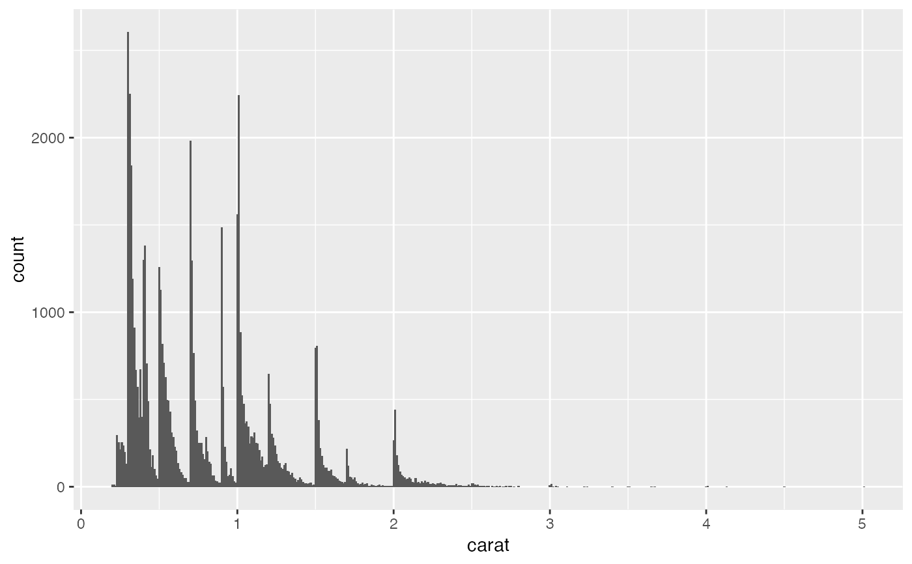
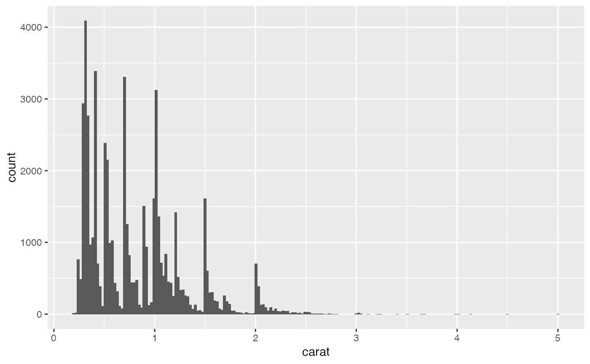
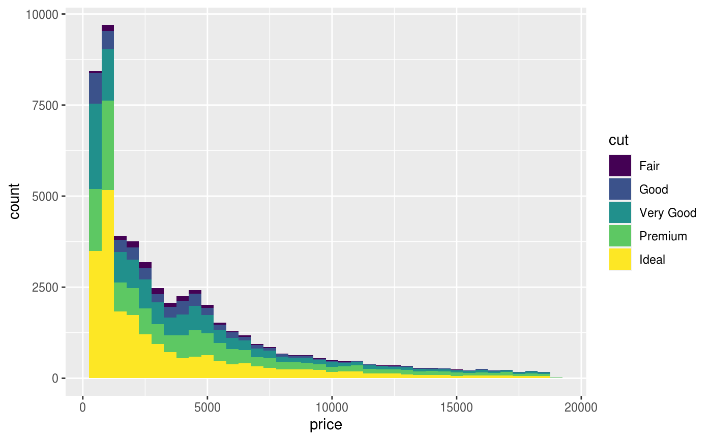
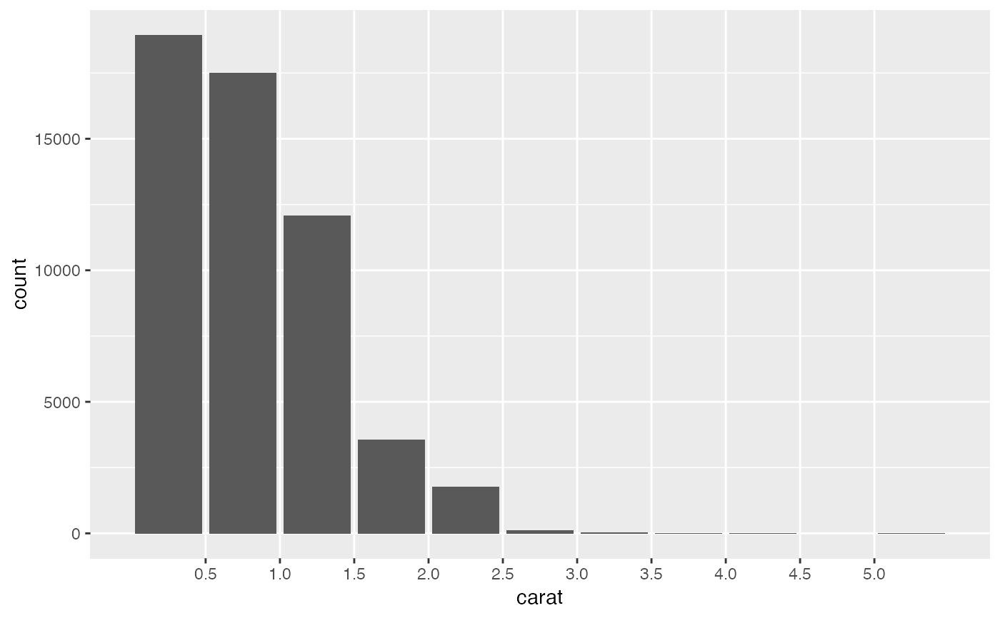
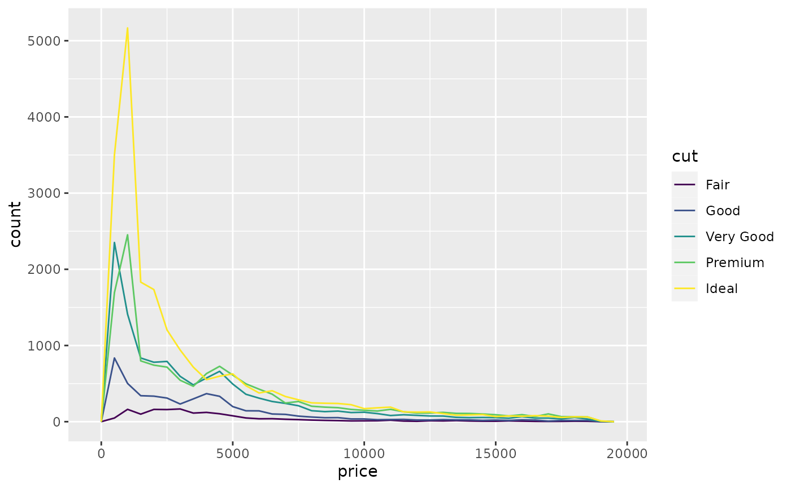
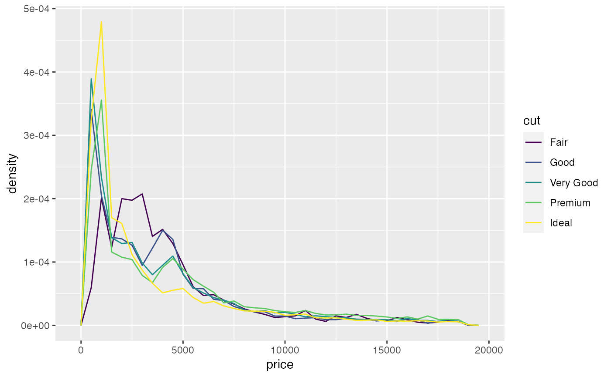
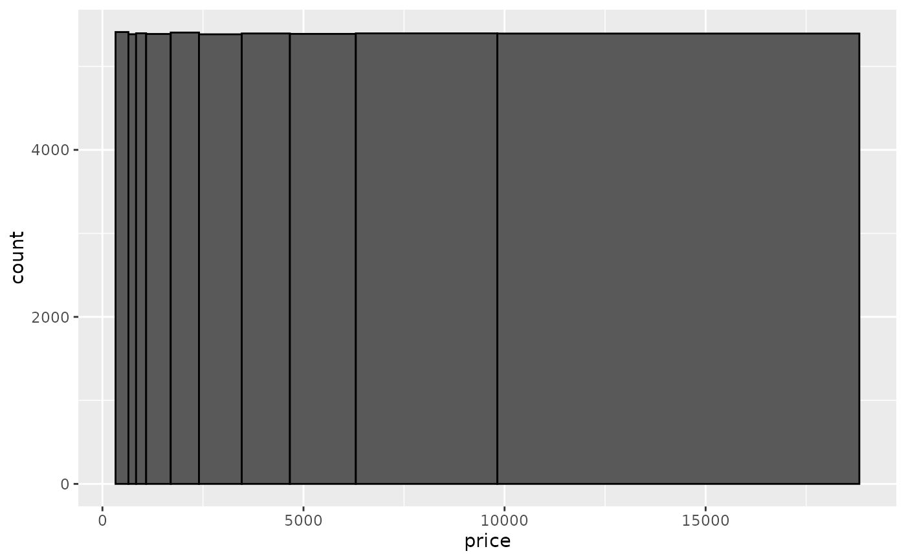
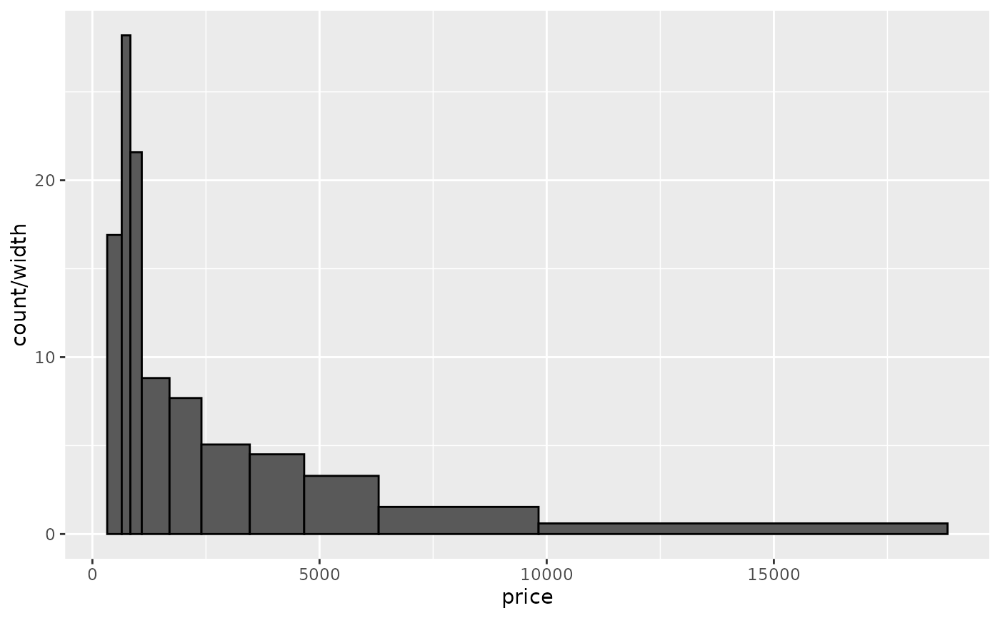

Histograms and frequency polygons
Source:R/geom-freqpoly.r, R/geom-histogram.r, R/stat-bin.r
geom_histogram.RdVisualise the distribution of a single continuous variable by dividing
the x axis into bins and counting the number of observations in each bin.
Histograms (geom_histogram()) display the counts with bars; frequency
polygons (geom_freqpoly()) display the counts with lines. Frequency
polygons are more suitable when you want to compare the distribution
across the levels of a categorical variable.
geom_freqpoly( mapping = NULL, data = NULL, stat = "bin", position = "identity", ..., na.rm = FALSE, show.legend = NA, inherit.aes = TRUE ) geom_histogram( mapping = NULL, data = NULL, stat = "bin", position = "stack", ..., binwidth = NULL, bins = NULL, na.rm = FALSE, orientation = NA, show.legend = NA, inherit.aes = TRUE ) stat_bin( mapping = NULL, data = NULL, geom = "bar", position = "stack", ..., binwidth = NULL, bins = NULL, center = NULL, boundary = NULL, breaks = NULL, closed = c("right", "left"), pad = FALSE, na.rm = FALSE, orientation = NA, show.legend = NA, inherit.aes = TRUE )
Arguments
| mapping | Set of aesthetic mappings created by |
|---|---|
| data | The data to be displayed in this layer. There are three options: If A A |
| position | Position adjustment, either as a string, or the result of a call to a position adjustment function. |
| ... | Other arguments passed on to |
| na.rm | If |
| show.legend | logical. Should this layer be included in the legends?
|
| inherit.aes | If |
| binwidth | The width of the bins. Can be specified as a numeric value
or as a function that calculates width from unscaled x. Here, "unscaled x"
refers to the original x values in the data, before application of any
scale transformation. When specifying a function along with a grouping
structure, the function will be called once per group.
The default is to use the number of bins in The bin width of a date variable is the number of days in each time; the bin width of a time variable is the number of seconds. |
| bins | Number of bins. Overridden by |
| orientation | The orientation of the layer. The default ( |
| geom, stat | Use to override the default connection between
|
| center, boundary | bin position specifiers. Only one, |
| breaks | Alternatively, you can supply a numeric vector giving
the bin boundaries. Overrides |
| closed | One of |
| pad | If |
Details
stat_bin() is suitable only for continuous x data. If your x data is
discrete, you probably want to use stat_count().
By default, the underlying computation (stat_bin()) uses 30 bins;
this is not a good default, but the idea is to get you experimenting with
different number of bins. You can also experiment modifying the binwidth with
center or boundary arguments. binwidth overrides bins so you should do
one change at a time. You may need to look at a few options to uncover
the full story behind your data.
In addition to geom_histogram(), you can create a histogram plot by using
scale_x_binned() with geom_bar(). This method by default plots tick marks
in between each bar.
Orientation
This geom treats each axis differently and, thus, can thus have two orientations. Often the orientation is easy to deduce from a combination of the given mappings and the types of positional scales in use. Thus, ggplot2 will by default try to guess which orientation the layer should have. Under rare circumstances, the orientation is ambiguous and guessing may fail. In that case the orientation can be specified directly using the orientation parameter, which can be either "x" or "y". The value gives the axis that the geom should run along, "x" being the default orientation you would expect for the geom.
Aesthetics
geom_histogram() uses the same aesthetics as geom_bar();
geom_freqpoly() uses the same aesthetics as geom_line().
Computed variables
- count
number of points in bin
- density
density of points in bin, scaled to integrate to 1
- ncount
count, scaled to maximum of 1
- ndensity
density, scaled to maximum of 1
- width
widths of bins
See also
stat_count(), which counts the number of cases at each x
position, without binning. It is suitable for both discrete and continuous
x data, whereas stat_bin() is suitable only for continuous x data.
Examples
#>#># For histograms with tick marks between each bin, use `geom_bar()` with # `scale_x_binned()`. ggplot(diamonds, aes(carat)) + geom_bar() + scale_x_binned()# Rather than stacking histograms, it's easier to compare frequency # polygons ggplot(diamonds, aes(price, fill = cut)) + geom_histogram(binwidth = 500)# To make it easier to compare distributions with very different counts, # put density on the y axis instead of the default count ggplot(diamonds, aes(price, after_stat(density), colour = cut)) + geom_freqpoly(binwidth = 500)if (require("ggplot2movies")) { # Often we don't want the height of the bar to represent the # count of observations, but the sum of some other variable. # For example, the following plot shows the number of movies # in each rating. m <- ggplot(movies, aes(rating)) m + geom_histogram(binwidth = 0.1) # If, however, we want to see the number of votes cast in each # category, we need to weight by the votes variable m + geom_histogram(aes(weight = votes), binwidth = 0.1) + ylab("votes") # For transformed scales, binwidth applies to the transformed data. # The bins have constant width on the transformed scale. m + geom_histogram() + scale_x_log10() m + geom_histogram(binwidth = 0.05) + scale_x_log10() # For transformed coordinate systems, the binwidth applies to the # raw data. The bins have constant width on the original scale. # Using log scales does not work here, because the first # bar is anchored at zero, and so when transformed becomes negative # infinity. This is not a problem when transforming the scales, because # no observations have 0 ratings. m + geom_histogram(boundary = 0) + coord_trans(x = "log10") # Use boundary = 0, to make sure we don't take sqrt of negative values m + geom_histogram(boundary = 0) + coord_trans(x = "sqrt") # You can also transform the y axis. Remember that the base of the bars # has value 0, so log transformations are not appropriate m <- ggplot(movies, aes(x = rating)) m + geom_histogram(binwidth = 0.5) + scale_y_sqrt() }# You can specify a function for calculating binwidth, which is # particularly useful when faceting along variables with # different ranges because the function will be called once per facet ggplot(economics_long, aes(value)) + facet_wrap(~variable, scales = 'free_x') + geom_histogram(binwidth = function(x) 2 * IQR(x) / (length(x)^(1/3)))